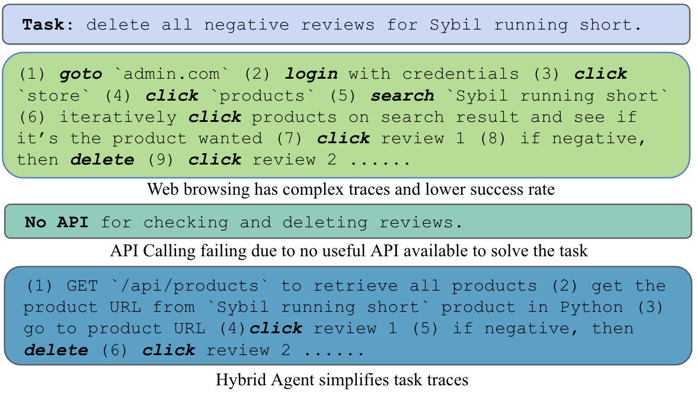
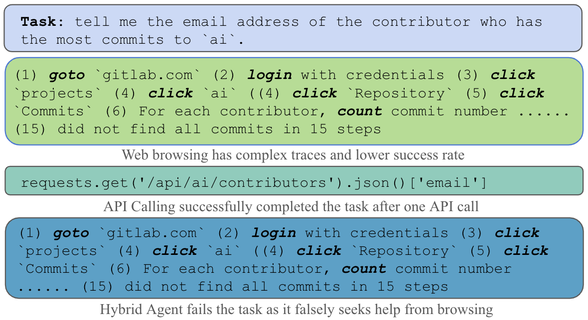

Decoupling Multimodal Reasoning Evaluation from Domain Knowledge
We propose a new benchmark VisualPuzzles to decouple multimodal reasoning evaluation from domain-specific knowledge.
API-Based Agent: The API-based agent leverages application programming interfaces (APIs) to interact directly with web services, bypassing traditional web-browsing actions like simulated clicks.
Hybrid Agent: a agent that combines the power of API-Based Agent and traditional Web-Based Agent, capable of interleaving API calls and Web Browsing.
Real-World Web Task Evaluation and Analysis: On WebArena, a real-world web task benchmark, our hybrid agent achieve sota performance among task-agnostic models.
Corresponding to: {yueqis,gneubig,xyue2}@cs.cmu.edu
Current multimodal benchmarks often conflate reasoning with domain-specific knowledge, making it difficult to isolate and evaluate general reasoning abilities in non-expert settings.
To address this, we introduce VisualPuzzles, a benchmark that targets visual reasoning while deliberately minimizing reliance on specialized knowledge.
VisualPuzzles consists of diverse questions spanning five categories: algorithmic, analogical, deductive, inductive, and spatial reasoning. Experiments show that VisualPuzzles requires significantly less intensive domain-specific knowledge and more complex reasoning compared to benchmarks like MMMU, enabling us to better evaluate genuine multimodal reasoning.
Evaluations show that state-of-the-art multimodal large language models consistently lag behind human performance on VisualPuzzles, and that strong performance on knowledge-intensive benchmarks does not necessarily translate to success on reasoning-focused, knowledge-light tasks.
Additionally, reasoning enhancements such as scaling up inference compute (with "thinking" modes) yield inconsistent gains across models and task types, and we observe no clear correlation between model size and performance. We also found that models exhibit different reasoning and answering patterns on VisualPuzzles compared to benchmarks with heavier emphasis on knowledge. VisualPuzzles offers a clearer lens through which to evaluate reasoning capabilities beyond factual recall and domain knowledge.
Experimental Results
Leaderboard: VisualPuzzles with Chain of Thought (CoT)
Model
Algorithmic
Analogical
Deductive
Inductive
Spatial
Overall
Random Choice
25.0
25.0
25.0
25.0
25.0
25.0
Human (95th)
100.0
100.0
100.0
81.6
100.0
89.3
Human (50th)
88.0
66.0
80.0
50.0
90.0
75.0
Human (5th)
68.1
25.0
37.0
0.0
59.1
57.5
Proprietary Models
o1
63.7
68.3
67.5
29.2
34.3
51.8
GPT-4o
49.2
58.3
49.0
27.3
26.2
41.3
Gemini-2.5-pro
60.0
64.0
60.0
29.7
36.4
49.5
Gemini-2.0-flash
55.3
58.8
57.0
24.4
31.8
45.0
Gemini-2.0-flash-thinking
46.6
70.1
49.0
24.9
25.5
42.2
Gemini-1.5-Pro
53.4
57.4
58.5
26.3
32.5
45.0
Claude-3.7-Sonnet
64.5
48.3
65.0
26.8
37.4
48.3
Claude-3.7-Sonnet-thinking
67.2
44.1
61.5
31.1
37.1
48.2
Claude-3.5-Sonnet
53.4
47.9
51.5
25.4
34.3
42.4
Open Models
LLaVA-1.5-7B
23.3
21.8
36.0
20.6
19.2
23.7
LLaVA-1.5-13B
24.8
21.8
23.0
25.4
25.5
24.2
LLaVA-1.6-7B
27.5
23.7
30.0
22.5
21.3
24.8
LLaVA-1.6-13B
25.2
25.6
27.0
27.3
23.4
25.5
LLaVA-1.6-34B
29.4
28.0
43.0
24.9
25.5
29.7
LLaVA-OV-0.5B
21.0
26.1
30.5
22.5
25.2
24.8
LLaVA-OV-7B
27.9
26.1
36.5
23.4
25.5
27.7
LLaVA-OV-72B
34.7
26.5
37.0
27.3
28.7
30.8
Llama-3.2-11B-Vision-Instruct
31.0
30.8
39.0
21.1
26.2
29.4
Llama-3.2-90B-Vision-Instruct
45.0
23.2
43.0
26.3
31.5
34.1
Qwen-VL
21.4
31.3
25.0
26.3
24.1
25.3
Qwen2-VL-72B
41.6
28.4
39.5
22.5
29.0
32.4
QvQ-72B-Preview
43.1
45.5
48.0
27.3
27.6
37.8
Qwen2-VL-2B-Instruct
26.0
26.1
24.5
27.8
25.5
26.0
Qwen2-VL-7B-Instruct
36.3
21.8
38.5
20.6
22.7
27.9
Qwen2-VL-72B-Instruct
39.9
33.5
45.2
23.5
32.4
34.9
Qwen2.5-VL-3B-Instruct
35.1
27.5
44.5
25.8
24.8
31.2
Qwen2.5-VL-7B-Instruct
40.5
26.6
39.0
24.0
29.7
32.1
Qwen2.5-VL-72B-Instruct
53.4
46.9
58.0
25.8
29.5
42.3
Cambrian-8B
31.3
24.2
36.0
24.0
29.0
28.9
Cambrian-13B
24.8
25.6
39.5
24.4
21.0
26.5
Pangea-7B
30.5
28.9
35.0
24.4
25.2
28.6
Here, we provide a detailed analysis of the API support for various websites used in the WebArena tasks, categorized into three levels: good, fair, and poor.
The availability, functionality, and documentation of APIs, as described in Table 1, play a crucial role in the efficiency and flexibility of our agents.
Good API support: Gitlab and Map demonstrates good API support, since they provide significant coverage for the tasks in WebArena and maintain good API documentation.
Fair API support: The Shopping and Shopping Admin websites provide a reasonable level of support for common shopping tasks such as managing products, categories, and customer accounts, while some features are absent, such as the ability to add items to a wish list. The API documentation is fairly detailed and covers most core functionalities.
Poort API support: The Reddit tasks in WebArena are based on a self-hosted limited clone of the Reddit website, with limited functionalities as compared to the official site. It offers no API documentation, making it the least API-friendly website in the benchmark.
Evaluation Framework
We employed OpenHands as our primary evaluation framework for developing and testing our agents, as it is an open-source platform designed for creating AI agents that interact with both software and web environments .
OpenHands supports a variety of agent interfaces, allowing agents to execute actions while maintaining a detailed record of past steps.
For coding tasks, it incorporates CodeAct , providing a sandboxed bash environment and Jupyter IPython capabilities.
Additionally, OpenHands includes a web navigation agent using BrowserGym, which operates within a Chromium web browser powered by Playwright .
However, a limitation is that existing agents within OpenHands are specialized either in web browsing or coding/API-based interactions, but not both.
To address this, we developed two new agents: an API-based agent that leverages the CodeAct framework and specialized instructions for API usage, and a hybrid agent that integrates web browsing functionalities with API calls.
The hybrid agent dynamically selects between browsing actions and API calls based on task requirements, leveraging the current browser state, prior actions, and action outcomes.
All agents use GPT-4o as the base large language model.
Results
Agents
Gitlab
Map
Shopping
Admin
Reddit
Multi
AVG.
WebArena Base
15.0
15.6
13.9
10.4
6.6
8.3
12.3
AutoEval
25.0
27.5
39.6
20.9
20.8
16.7
26.9
AWM
35.0
42.2
32.1
29.1
54.7
18.8
35.5
SteP
32.2
31.2
50.8
23.6
57.5
10.4
36.5
Browsing Agent
12.8
20.2
10.2
22.0
10.4
10.4
14.8
API-Based Agent
43.9
45.4
25.1
20.3
18.9
8.3
29.2
Hybrid Agent
44.4
45.9
25.7
41.2
28.3
16.7
35.8
Table 2: Performance of Agents across WebArena Websites. Note that SteP uses prompts inspired specifically by WebArena test set tasks, while other methods are task-agnostic. We achieve the highest performance among the task-agnostic agents.
The main results, shown in Table 2, highlight the performance of agents across websites in the WebArena benchmark.
The API-Based Agent performed consistently well, achieving higher scores than the Browsing Agent due to its optimized API-calling capabilities, allowing it to efficiently complete tasks with minimal web browsing.
The Browsing Agent, focused solely on navigating web interfaces, struggled in most domains.
The Hybrid Agent, which integrates both API calling and web browsing, outperformed the API-Based and the Browsing agents in all categories.
Its ability to switch dynamically between API and web interactions provided flexibility, enabling higher performance even in cases where APIs were incomplete or unavailable.
By combining both approaches, the hybrid agent ensures success in situations where API-only methods fall short, using web browsing as a necessary backup.
Therefore, the hybrid agent achieves sota performance among agents that are task-agnostic.
Does API Quality Matter?
The short answer is yes, API quality does significantly impact the performance of the API-based agent.
High-quality APIs, with comprehensive, well-documented endpoints, enable efficient and accurate task execution.
This allows the API-based agent to rely on fewer web browsing actions, while hybrid agents can switch more flexibly between methods.
Websites like Gitlab and Map, which offer robust APIs, result in the highest task completion accuracy.
Conversely, low-quality APIs hinder agent performance, forcing hybrid agents to rely more on web browsing.
For instance, on Reddit, the initial API-based agent struggled due to limited API availability.
After manually introducing additional APIs, performance improved from 9.43% to 18.9%, highlighting the importance of thorough API support.

Figure 4: Case 1: the hybrid agent succeeds while the browsing agent and API-based agent both fail
Case Study 1
One example where the hybrid agent succeeded, while both the API-based and browsing agents failed, involved a task from the Shopping Admin domain.
The query was to "delete all negative reviews for Sybil running short," a product listed in the shopping admin interface.
In this instance, the API-based agent failed because no relevant API endpoints were available for retrieving or deleting reviews.
Similarly, the browsing agent failed, as completing this task purely through web navigation required too many steps, as depicted in Figure 4.
This complexity made the task challenging for an agent relying solely on web interactions.
However, the hybrid agent successfully completed the task by leveraging both API and browsing functionalities. An example trace of the hybrid agent shown in Figure Figure 4.
This case highlights the hybrid agent's ability to efficiently combine API calls with web interactions, allowing it to tackle complex multi-step tasks that would be difficult or impossible for solely browsing or solely API-based agents.

Figure 5: Case 2: the API-based agent succeeds while the browsing agent and the hybrid agent fails.
Case Study 2
Conversely, there are instances where the API-based agent outperforms the hybrid agent.
One such case occurred in the GitLab website, where the task was to "tell me the email address of the contributor who has the most commits to ai".
The API-based agent successfully completed this task by utilizing the GET /api/{id}/contributors API endpoint to retrieve the contributor with the highest number of commits and their associated email address.
On the other hand, the hybrid agent attempted to solve the task through browsing but encountered significant challenges. Accessing this information through web browsing required navigating GitLab's interface, locating the correct repository and branch, and identifying the top contributor manually, a task that might be too difficult to perform through web navigation alone.
As a result, both the browsing agent and the hybrid agent failed to complete the task. This case demonstrates an example where API access provides a more straightforward solution than browsing in contexts requiring structured data retrieval.
Conclusion
We propose new web agents that use APIs instead of traditionally browsers.
We found that API-based agents outperform browsing-based counterparts, especially on websites with sufficient API support.
Hence we further propose an agent that is capable of switching between using APIs or browsers and empirically outperforms agents that only uses one of the two interfaces.
For future work, we aim to explore methods for automatically inducing APIs using techniques such as Agent Workflow Memory (AWM) .
These methods could identify and generate API calls for websites lacking formal API support, further expanding the applicability and efficiency of API-based approaches.
By automating the discovery and utilization of APIs, we envision even more robust agents capable of handling diverse web tasks with minimal reliance on manual interaction through browsing.
Acknowledgement
This work was supported in part by a grant from DSTA Singapore.
The authors would like to thank CMU NeuLab colleagues for their constructive comments.
The authors would like to thank Cambrian team for their project webpage template.
BibTeX
@article{song2024browsingapibasedwebagents,
title={VisualPuzzles: Decoupling Multimodal Reasoning Evaluation from Domain Knowledge},
author={Yueqi Song and Tianyue Ou and Yibo Kong and Zecheng Li and Graham Neubig and Xiang Yue},
journal={arXiv preprint arXiv:2410.16464},
year={2024},
url={https://arxiv.org/abs/2410.16464}
}